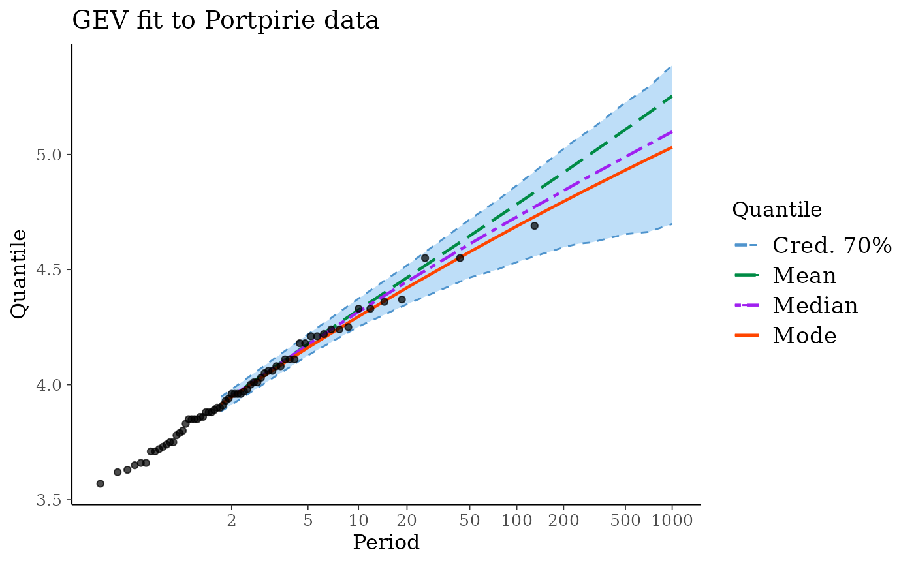
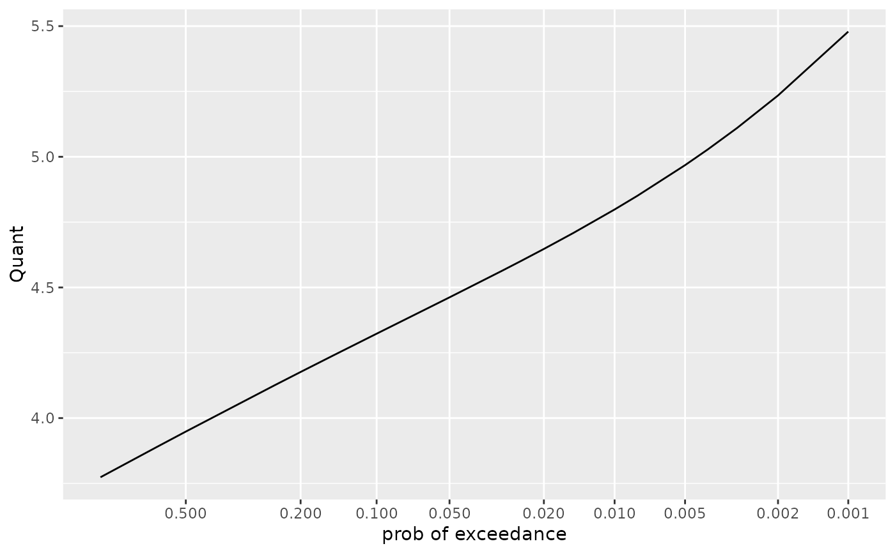
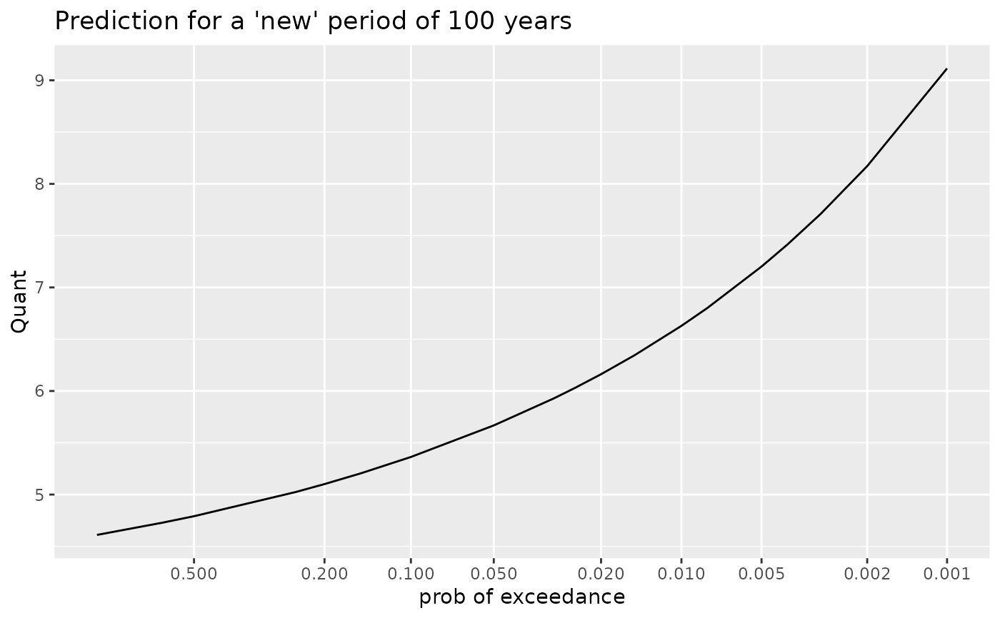
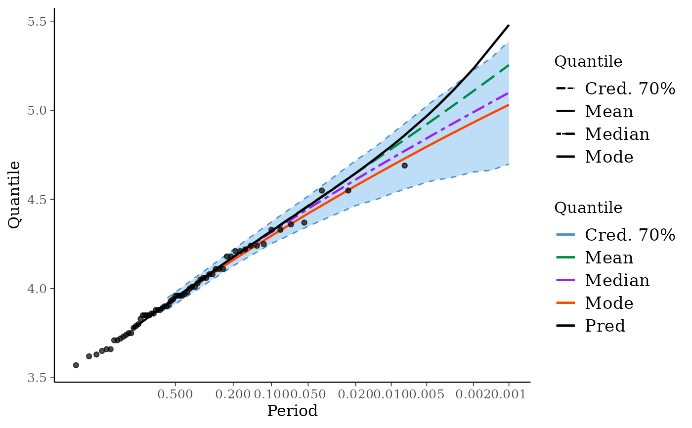

Bayes Extreme-Value
bever-package.RdCollection of functions to cope with Bayes Extreme-Value models with various parameterisations.
Author
Yves Deville <deville.yves@alpestat.com> Maintainer: Yves Deville <deville.yves@alpestat.com>
Examples
## ========================================================================
## 'portirie' example. Wrap the results given by 'revdbayes',
## retrieving the MAP within the object
## =========================================================================
prior <- set_prior(prior = "flatflat", model = "gev")
post <- rpost_rcpp(n = 10000, model = "gev", prior = prior,
data = portpirie)
MAP <- post$f_mode
names(MAP) <- c("loc", "scale", "shape")
postGEV0 <- GEVBayes0(MCMC = post$sim_vals, yMax = portpirie, MAP = MAP)
## ========================================================================
## RL plot
## ========================================================================
RL0 <- RL(postGEV0)
autoplot(postGEV0) + ggtitle("GEV fit to Portpirie data")

## ========================================================================
## predictive distribution: compute and autoplot for a given 'new'
## duration
## ========================================================================
pred <- predict(postGEV0)
autoplot(pred, xVar = "T")

autoplot(predict(postGEV0, newDuration = 100)) +
ggtitle("Prediction for a 'new' period of 100 years")

## ========================================================================
## Compare the predictive distribution corresponding to a new duration
## identical to the (constant) block duration.
##
## CAUTION: Models with blockDuration != 1.0 have not been fully
## checked yet.
## ========================================================================
g <- autoplot(postGEV0, xVar = "p")
g <- g + autolayer(pred, aes = TRUE)
#> Warning: Ignoring unknown aesthetics: fill
g
